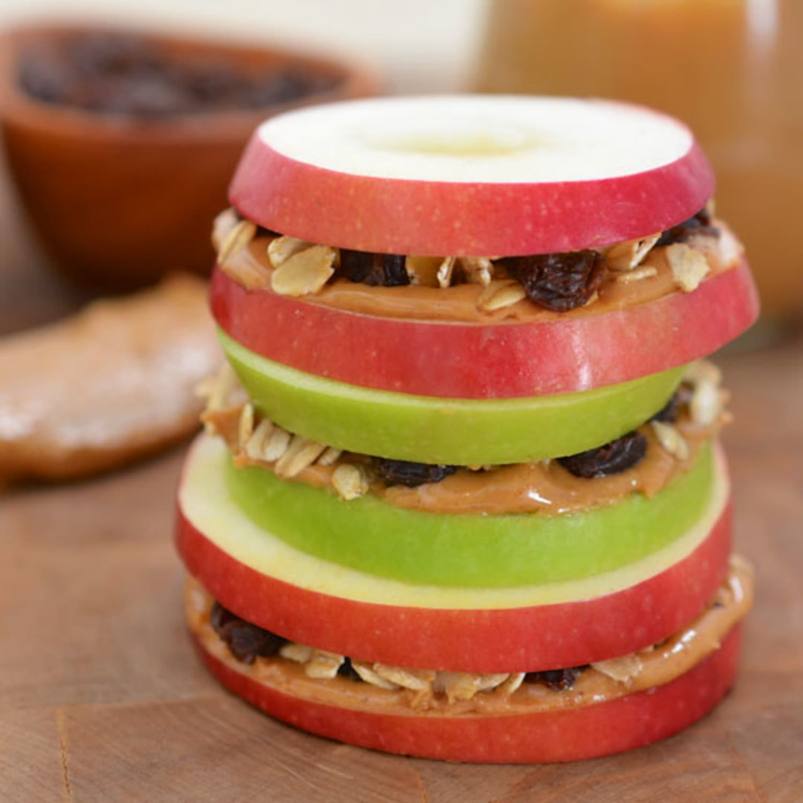
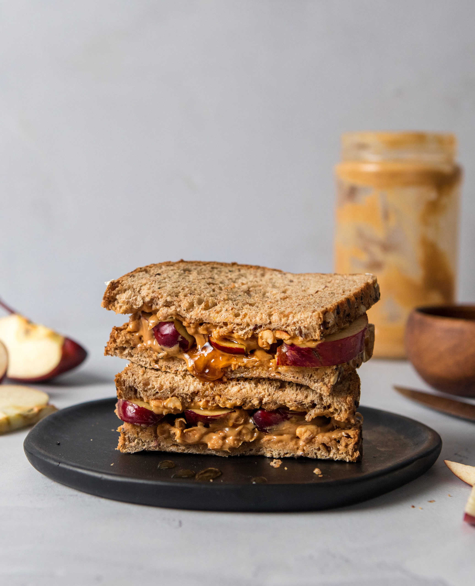

1. Apple & Nut Butter Sandwiches
A simple, balanced snack with fruit, healthy fats, and a hit of sweetness.
Ingredients
- 2 slices whole wheat bread
- 1 apple, cored and thinly sliced
- 2 tbsp nut butter (peanut or almond)
- Optional: drizzle of honey or sprinkle of cinnamon
Instructions
- Wash and dry the apple, then slice thinly and remove the core.
- Spread nut butter evenly on one or both slices of bread.
- Layer apple slices over the nut butter and add honey/cinnamon if using.
- Close the sandwich and cut in half if desired.
Approx: 320 kcal • 8–10g protein • 35g carbs • 14g fat